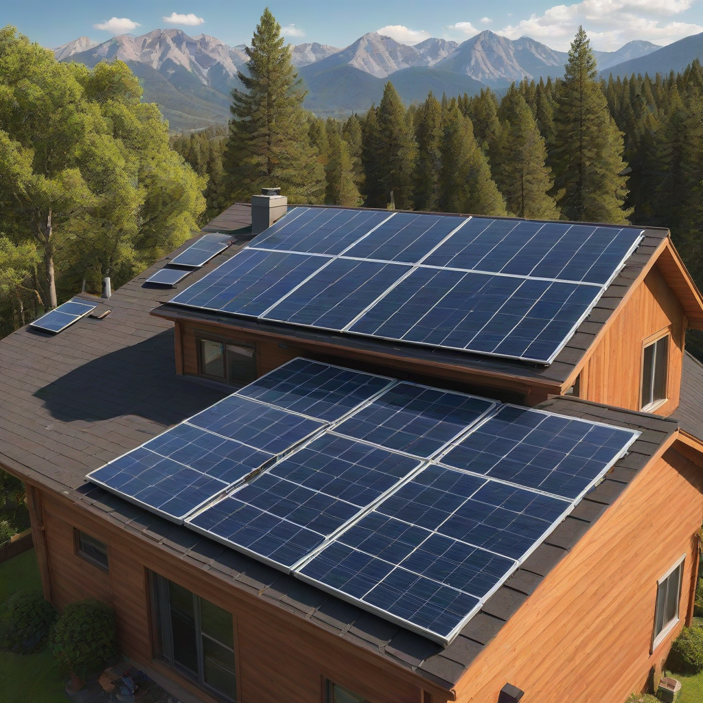
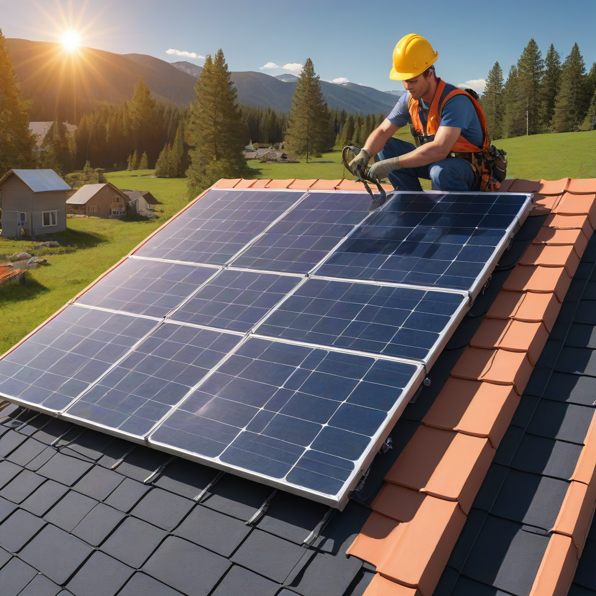

If you’re considering installing your own solar system, congratulations—you’re thinking like a savvy energy investor. But before you unbox your first panel, understand this: DIY solar is powerful, cost-saving, and deeply rewarding… *if* you prioritize safety. In 2026, with solar prices at historic lows and incentives at peak strength, more homeowners are tackling installations themselves. Yet the risks—electrical arc flash, falls from roofs, and improper grounding—remain serious. This DIY solar panel installation safety guide gives you the exact steps, tools, and legal checks you need to protect yourself, your home, and your investment. We’ll walk through standards, real 2026 pricing, smart troubleshooting, and when to call in a pro—even for DIYers.
What Is DIY Solar Panel Installation Safety Guide?

Definition
A DIY solar panel installation safety guide is a structured set of best practices, code requirements, and procedural checks designed to prevent injury, fire, and system failure during self-installed solar projects. It’s not optional—it’s mandatory under the National Electrical Code (NEC) Article 690 for grid-tied and off-grid systems alike.
How It Works
At its core, solar safety is about controlling three hazards: electricity (DC and AC), height (roof work), and environmental exposure (sun, wind, moisture). Here’s how it breaks down in practice:
- Planning — Verify local permits, utility interconnection rules, and site conditions.
- Equipment selection — Use only UL-listed, NEC-compliant components (inverters, racking, wiring, disconnects).
- Installation protocol — Follow de-energizing procedures, use PPE (personal protective equipment), and implement rapid shutdown.
- Inspection & commissioning — Pass AHJ inspection *before* grid connection.
Key Components of a Safe System
- Rapid shutdown devices — Required by NEC 2017+ (and enforced in 2026) to reduce roof voltage to ≤30V within 30 seconds of shutdown.
- DC disconnects — Must be rated for solar DC voltage/current (typically 600V DC).
- Ground fault protection — Integral in modern inverters; verify with multimeter testing.
- Structural anchoring — Racking must meet local wind/snow load codes (check ASCE 7-22).
Why Homeowners Care
Ignoring safety isn’t just risky—it’s costly. In 2025, the NFPA reported over 200 solar-related residential fires in the U.S., many traceable to DIY errors like undersized w

Cost Breakdown
Typical Costs (2026)
DIY solar cuts labor costs (typically $0.50–$1.00/W), but safety can’t be compromised. Here’s what you’ll budget for a 6 kW system (typical U.S. home size):
- Panels: $2.50–$3.50/watt → $15,000–$21,000 before incentives
- Inverter (string or microinverter): Enphase IQ8 or SolarEdge → $1,800–$3,200
- Battery storage (optional but increasingly popular): Tesla Powerwall $11,500–$15,500 installed; Enphase IQ Battery $4,000–$8,000
- Safety & compliance gear (rarely budgeted by DIYers!): UL-listed conduits, DC disconnects, rapid shutdown modules, fall arrest kit → $800–$1,500
Pro tip: Always include a 10% contingency for unexpected parts or AHJ-mandated upgrades.
Regional Differences — 2026 Pricing Adjustments
Costs vary significantly based on local labor laws, permit fees, and utility interconnection policies:
| Region | Permit Fees (2026) | Grid Interconnection Cost | Typical DIY Safety Gear Cost |
|---|---|---|---|
| California | $300–$600 | $0 (PG&E netbilling auto-approves) | $1,200+ |
| Florida | $150–$350 | $200–$500 (utility inspection fee) | $900–$1,100 |
| Texas | $50–$200 (varies by city) | $0–$100 (ERCOT-friendly) | $800–$1,000 |
| Northeast (e.g., NY, MA) | $400–$800 | $300–$700 (rigorous inspection) | $1,300+ |
Budget Planning
- Start with our 2026 Solar Cost Calculator for your ZIP code.
- Factor in the 30% federal ITC—it applies to equipment *and* installation labor (even DIY, if you document expenses).
- Never cut corners on safety gear: undersized wires cause 42% of solar electrical fires (NREL 2025 report).
Key Factors to Consider
Location
Your roof’s orientation, tilt, shading, and local weather dictate both system design *and* safety protocols:
- High-wind zones (Gulf Coast, Midwest): Use structural engineering sign-off; add wind-rated racking.
- High-snow areas (Rockies, Northeast): Increase tilt angle and reinforce mounts.
- Hot climates (SW U.S.): Ensure 20%+ derating for inverter output at 60°C+.
Usage Patterns
How you use electricity affects your system’s electrical safety design:
What Affects Cost & Safety
- Off-grid systems require more extensive grounding and battery safety (fuses, ventilation, fire suppression).
- Grid-tied with battery backup needs dual inverters and a separate critical-load panel—more complexity means more failure points.
- Net-zero homes need precise energy monitoring to avoid overproduction surges.
How to Compare Options
Run a hazard analysis before buying parts:
- Map all DC voltages >60V (NEC requires extra insulation and labeling).
- Calculate short-circuit current (Isc) for each string—ensure breakers/wiring handle it.
- Verify your inverter has anti-islanding protection (UL 1741 SA compliance).
Practical Tips and Fixes
Immediate Actions
Before turning on your system, do this checklist:
- Label every wire and disconnect—NEC 2023 requires visible labels for DC/AC circuits.
- Test ground resistance with a clamp meter—should be ≤25 ohms (per NEC 250.56).
- Perform a “no-load” voltage test on strings with multimeter before connecting to inverter.
- Install smoke detectors near the inverter/battery (especially in garages or attics).
Long-Term Savings
Quick Wins
- Upgrade to IP65-rated enclosures for outdoor electrical boxes—prevents moisture-induced faults.
- Replace old fuses with UL 437B circuit breakers for faster fault interruption.
- Apply UV-stable cable clips every 12” on DC runs—reduces chafe risk from wind vibration.
When to Upgrade
Replace components if:
- Your inverter is over 8 years old (efficiency drops ~0.5%/year).
- You’re adding more panels (check inverter max input voltage limits).
- Your rapid shutdown module isn’t NEC 2023-compliant (post-2017 systems need 30V/30-sec rule).
Frequently Asked Questions
Can I install solar on a metal roof without penetrating it?
Yes—but only with clamped systems designed for standing seam roofs (e.g., IronRidge, S-300). Never drill into corrugated metal without rubber gaskets and sealant. Always check with your roof warranty provider first.
Do I need a permit for a small off-grid shed system?
In most jurisdictions—even for 2 kW systems—you need a permit if it includes batteries or connects to a structure. Check your local DOE Solar Permitting Database for your city’s rules.
How do I verify if a panel is UL-listed for DC use?
Look for the UL 61730 mark on the back junction box. Also verify IEC 61215 (crystal integrity) and IEC 61701 (salt mist corrosion for coastal areas). Reputable brands like LG, SunPower, and Canadian Solar always publish test reports.
What’s the #1 mistake DIYers make during installation?
Skipping de-energizing steps. Even when the grid is off, solar panels generate electricity in daylight. Always cover panels with opaque tarps *before* disconnecting wiring, and wear voltage-rated gloves (Class 0, 500V minimum).
How do I pass inspection on a DIY install?
Three non-negotiables: (1) All connections in UL-listed enclosures, (2) rapid shutdown within 30 seconds, (3) proper grounding/bonding per NEC Article 250. Bring your wiring diagram and component data sheets to the inspection.
Is DIY solar legal in my state in 2026?
Yes—but with conditions. 48 states allow homeowners to install solar. However, only licensed electricians may connect to the grid in states like New York, Illinois, and Hawaii. Always confirm with your utility and AHJ first.
Conclusion
A safe DIY solar installation isn’t just about avoiding shocks or fires—it’s about maximizing your return on investment and ensuring your system delivers clean energy for 25+ years. In 2026, with incentives strong and technology mature, DIY is more viable than ever… but only if you respect the risks.
Your Action Plan
- Download the latest NEC Article 690 summary from NREL’s Solar Electric Systems page.
- Run a site hazard assessment using the checklist in our Site Assessment Guide.
- Order UL-listed safety gear first—don’t wait until Day 2. Prioritize rapid shutdown, DC disconnects, and PPE.
- File for permits early—many AHJs take 2–4 weeks to approve solar plans in 2026.
Remember: Every wire you run, every clamp you tighten, and every label you place is part of your safety net. Do it right the first time—and enjoy power that’s truly yours.